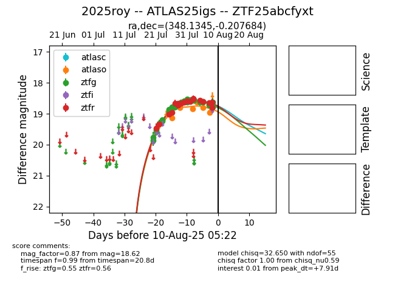

Target 2025roy at 2025-08-10 05:22, see:
FINK: fink-portal.org/2025roy
Lasair: lasair-ztf.lsst.ac.uk/objects/2025roy
ALeRCE: alerce.online/object/2025roy
TNS: wis-tns.org/object/2025roy
YSE: ziggy.ucolick.org/yse/transient_detail/2025roy
alt names
ZTF25abcfyxt (ztf,fink)
2025roy (tns,yse)
ATLAS25igs (atlas)
coordinates:
equatorial (ra, dec) = (348.1345,-0.20768)
galactic (l, b) = (77.4270,-54.10047)
photometry
last atlasc=18.59, atlaso=18.96, ztfg=18.62, ztfr=18.81
1 atlasc, 6 atlaso, 34 ztfg, 19 ztfr detections
